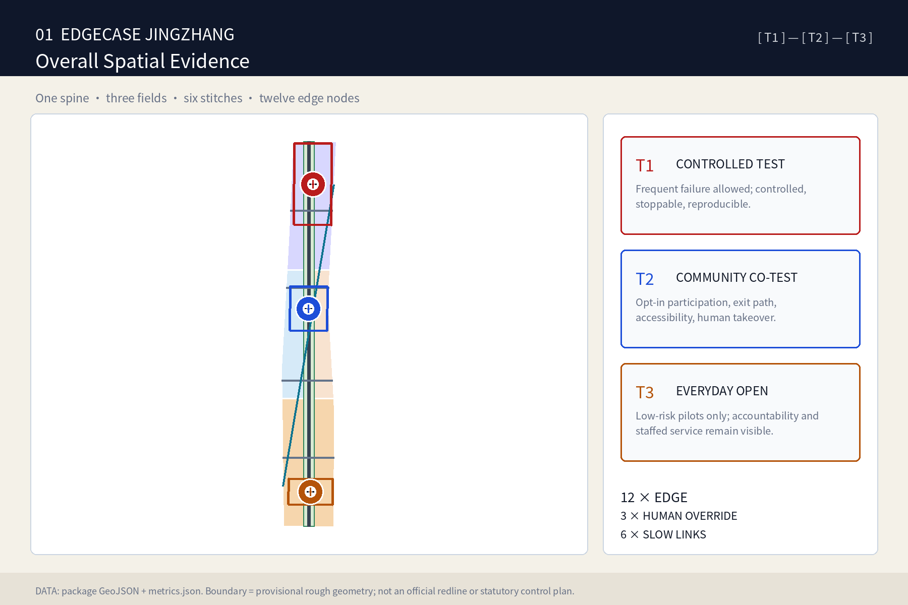
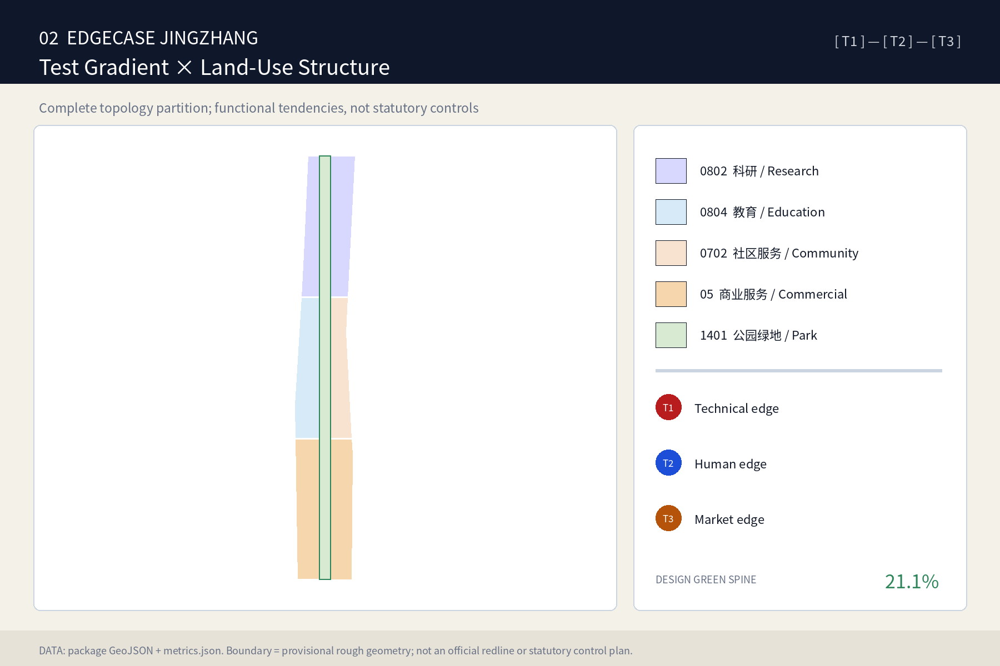
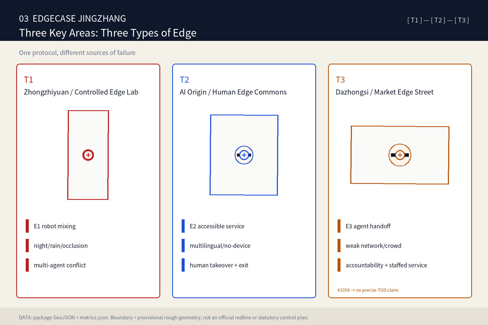
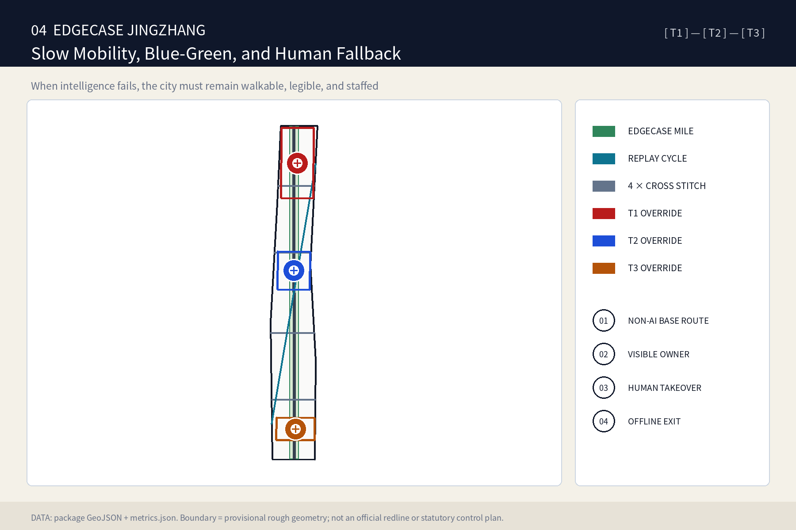
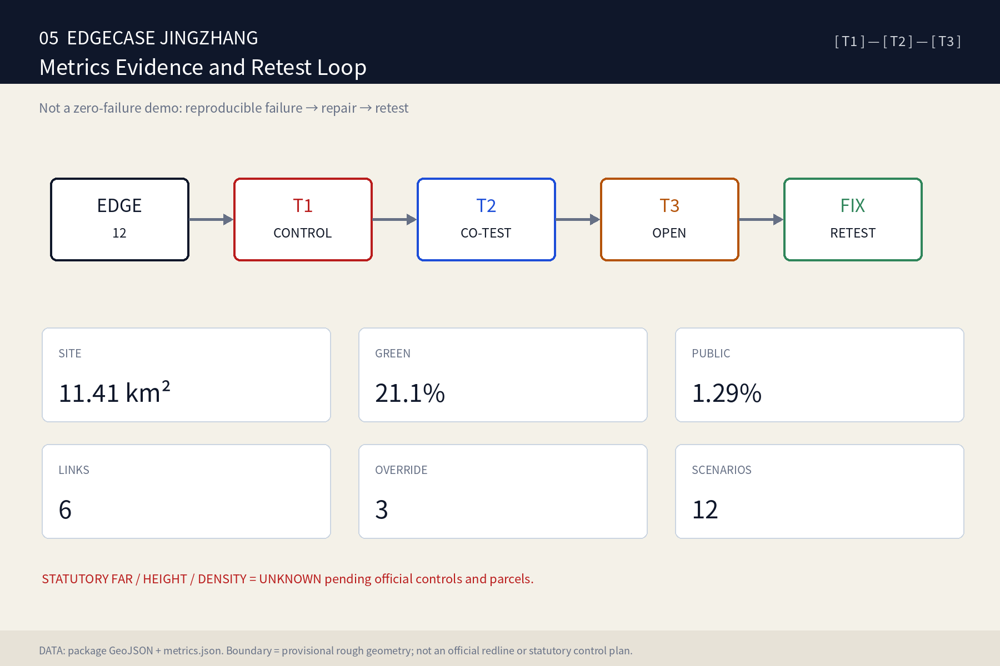

Overall map / three-tier scope

Core metrics
Area values derive from provisional rough geometry for content review and package recalculation only. FAR, height and density remain UNKNOWN.
T1 / T2 / T3 exposure gradient
T1 · Controlled
Frequent failures are allowed only when the setting is controlled, stoppable and reproducible.
T2 · Community co-test
Opt-in participation, exit rights, accessibility and staffed takeover.
T3 · Everyday open
Only low-risk capabilities enter normal use; accountable ownership and staffed service remain visible.
Land-use structure / three-tier exposure gradient

The diagram brings the continuous park spine, three key areas, and T1–T3 testing intensity into one structure. Land-use zones are participant-authored concepts, not statutory planning.
Key areas / land use / buildings

Zhongzhiyuan tests technical edges; AI Origin tests human edges; Dazhongsi tests market and interoperability edges. Six building footprints are reversible prototypes, not existing or approved construction.
Slow mobility / blue-green public space

One Edgecase Mile, four pedestrian cross-stitches and one replay cycle link. Failure never removes the non-AI base route, visible owner, human takeover or offline exit.
AI scenarios: twelve long-tail conditions
Filter by exposure tier to distinguish failures that belong in controlled reproduction, community co-testing, or everyday release. Multi-tier scenarios appear in every applicable result; filtering changes presentation only, not evidence data.
wheelchair/cane walkability
T2 + Edgecase Mile
Human fallback / stop rule
Staffed guidance; stop if the accessible path is discontinuous.
older user without smartphone
T2
Human fallback / stop rule
Desk, phone, and paper routes must remain equally reachable.
multilingual visitor
T2 / T3
Human fallback / stop rule
Provide human translation; abstain at low confidence.
child–guardian ambiguity
T2
Human fallback / stop rule
Make no automatic identity decision; transfer to staff.
night/rain/glare
T1 → T3
Human fallback / stop rule
Complete controlled replay before any open pilot.
event crowd stress
T3
Human fallback / stop rule
A capacity trigger switches to staffed operations.
low-speed robot mixing
T1 → T2
Human fallback / stop rule
E-stop, teleoperation, and speed limiting must remain available.
sensor disagreement
T1
Human fallback / stop rule
Surface disagreement instead of forcing one answer.
weak network/location drift
T1 / T2 / T3
Human fallback / stop rule
Retain offline-first wayfinding and staffed fallback.
health/public-service navigation
T2
Human fallback / stop rule
Navigation only, no diagnosis; hand off to professionals.
agent handoff
T3
Human fallback / stop rule
Name the accountable operator and staffed after-sales path.
extreme-heat routing
T2 / T3
Human fallback / stop rule
Human-issued safety rules override optimization.
Showing all 12 scenarios
Release protocol: from a failure record to the next exposure tier
This is not an automatic promotion engine. The accountable operator checks every gate before a pilot moves on; failure to meet any gate holds the current tier, restores staffed service, or exits. The matrix makes the existing T1/T2/T3 and human-fallback contract directly reviewable.
| Current tier | What is allowed | What must be demonstrated before release or continued operation | If not met |
|---|---|---|---|
| T1 Controlled | Controlled replay, device/sensor conflict, and emergency-stop drills. | The failure condition is reproducible; stop/power-off works; a record supports review. | Do not enter community testing; repair and retest in control. |
| T2 Community co-test | Opt-in accessibility, multilingual, public-service, and robot co-testing. | Exit and non-AI paths are equally reachable; staffed takeover is present; data are minimized. | Return to desk, paper wayfinding, or staffed guidance; pause co-test. |
| T3 Everyday open | Daily wayfinding, crowd operation, and agent-handoff pilots. | An accountable owner is named; capacity/low-confidence triggers work; staffed after-sales is reachable. | Switch to staffed operations or take offline; record the issue and return to T1/T2. |
Applies to EDGE-01—EDGE-12; it adds no deployment, approval, or safety-certification claim.
Renewal projects / task coverage
EC-01 Edgecase Mile; EC-02 Controlled Edge Court; EC-03 Human Override House; EC-04 Market Edge Forum; EC-05 Long-tail Atlas; EC-06 EDGECASE WEEK. Every pilot needs an owner, test question, data boundary, human takeover, stop rule, retest version and exit plan.

Self-check status / sources / assumptions
All three key-area boundaries remain provisional minor warnings; regenerate the entire package when official polygons arrive.
geometry/*.geojson → metrics.json → figures → HTML/PDFsources.json: OFFICIAL-ANNOUNCEMENT / AGENT-TASKBOOK / 5 official ecosystem casesassumptions.json: boundary / controls / KEY-003 / data minimization / reversible phasingThis page is fully offline: no CDN, remote tiles, fetch/API, or iframe.